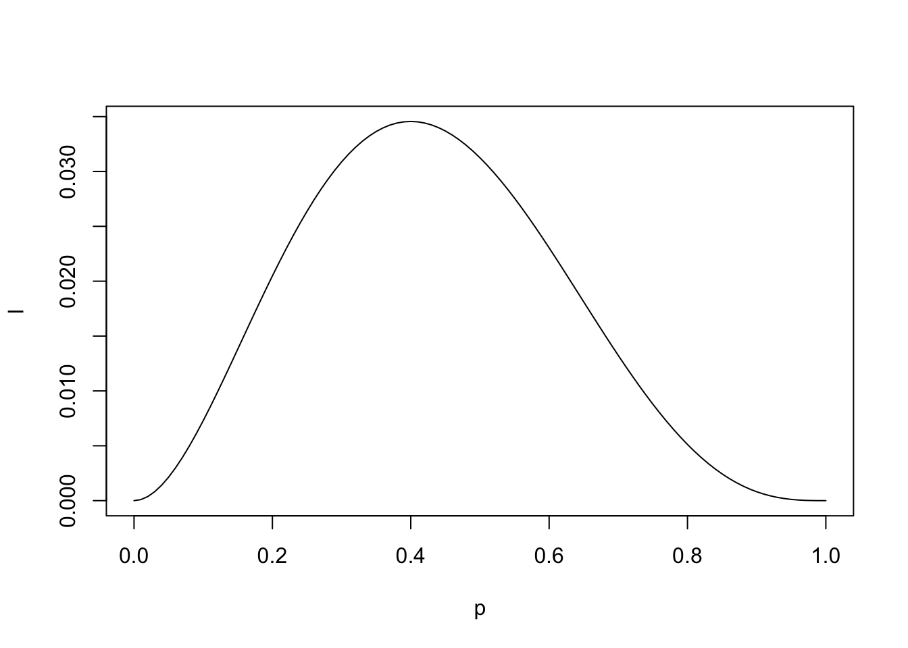
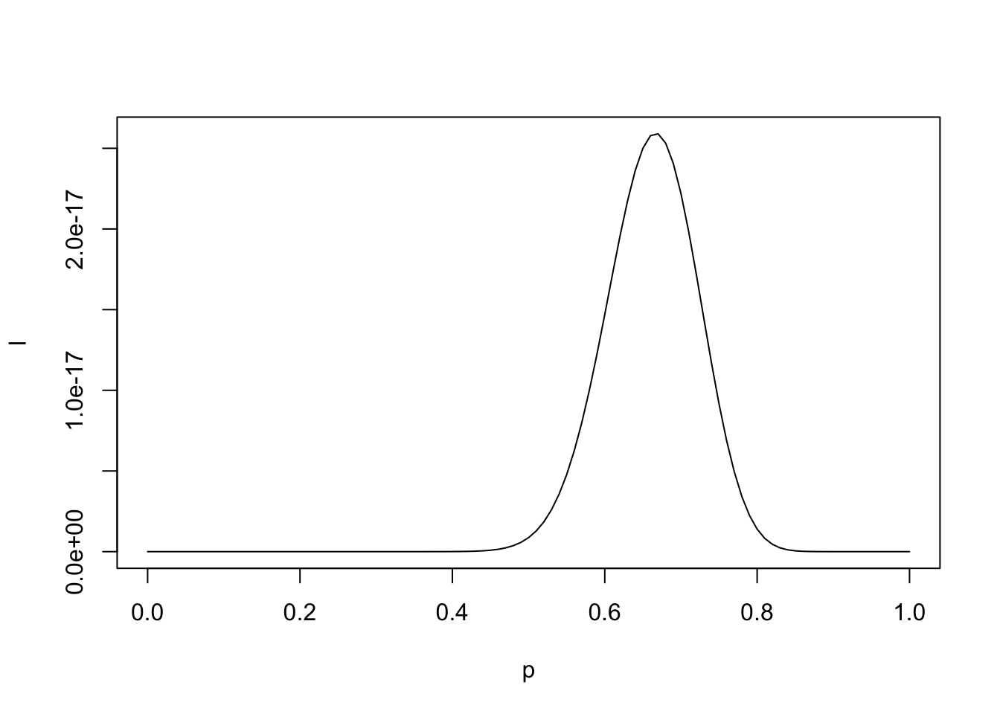
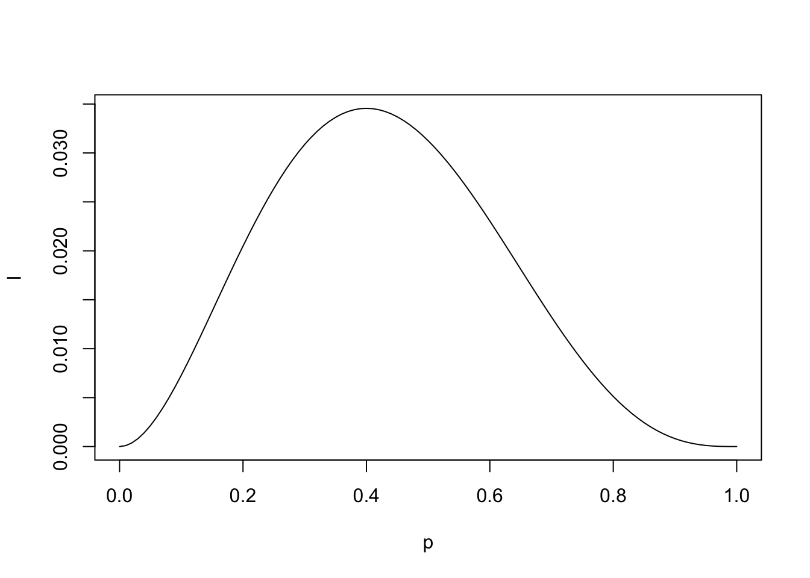
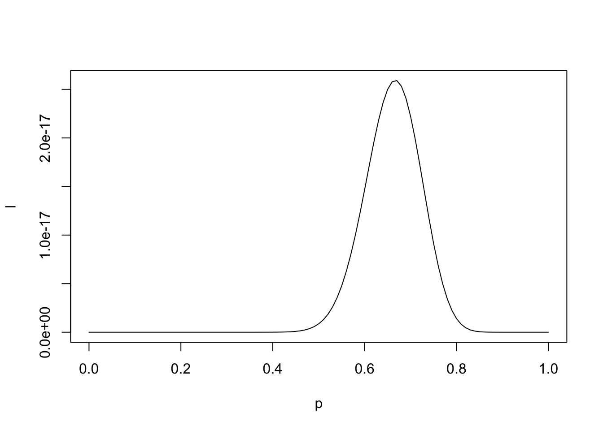

![]()
# compare what happens when we increase n.
p <- seq(0,1,by=0.01)
l <- (p^2)*(1-p)^3
plot(l ~ p, type="l")
p[which(l == max(l))][1] 0.4p <- seq(0,1,by=0.01)
l <- (p^40)*(1-p)^20
plot(l ~ p, type="l")
p[which(l == max(l))][1] 0.67Introduction of the book. Political science methodology is disjointed and not as completely coherent as it should (and needs) to be. King seeks to organize and centralize the political science methodology.
Statistic Model: a formal representation of the process by which a social system produces output.
Inference: the general process by which one uses observed data to learn about the social system and its outputs.
Estimation: the specific procedure by which one obtains estimates of features (usually parameters) of the statistical model.
The important question for political science research:
is the underlying process that gives rise to the observed data
What are the characteristics of the social system that produced these data?
What changes in known features of the social system might have produced data with different characteristics?
What is the specific stochastic process driving one’s results?
By posing these questions, statistical modelling will be more theoretically relevant and empirically fruitful.
Conditional probabilities: describing the uncertainty of an observed or hypothetical event given a set of assumptions about the world.
Likelihood: a measure of relative uncertainty
Summary: Run models that find parameters that are most likely to have generated the observed data.
These models are hard to interpret.
Goal: Familiarize you with a variety of MLE models used in the social sciences.
Probability has to sum to 1.
Probabilities are:
Bounded between 1 and 0.
Sum of probabilities equal 1.
Trials -> \(\infty\)
Mutually exclusive outcomes (Independent).
Theta is the only parameter we need to estimate.
We are still specifying the distribution of the outcome variable. Is it a poisson, bernoulli, normal, etc?
L stands for “likelihood function”
Our goal is to select some \(\theta\)* -> \(\hat{\theta}\) as to maximize the likelihood of these data being generated. Ways to do this:
plug in candidate \(\theta\)* values
look at the graph
optimize function (solve for \(\theta\)*)
No priors! (that would be Bayesian)
for our coin flip example, we know .5 is the probability but we only have a set of {H,H,T}
Without anymore knowledge, the best estimate of \(\theta\) is 2/3 or .66.
We use ML anytime our dependent variable has a distribution that was not generated by a Gaussian (normal) process.
see slide 23 for examples.
We can estimate all of these using OLS but we may hit a few snags and violation assumptions.
Working through an ML problem is as follows:
Build a parametric statistical model
Define the probability density for \(Y_i\) (uncertainty component)
Define the systematic component (\(\theta\))
Maximize the likelihood function, given the data.
Interpret
We will pretty much always use log-likelihood.
why?
logarithms turn multiplication problems into addition problems.
likelihood starts to breakdown around N=1000. Log-likelihood does not. Why?
Our optimization function is multiplying probabilities
what happens when we multiply a bunch of probabilities?
# compare what happens when we increase n.
p <- seq(0,1,by=0.01)
l <- (p^2)*(1-p)^3
plot(l ~ p, type="l")
p[which(l == max(l))][1] 0.4p <- seq(0,1,by=0.01)
l <- (p^40)*(1-p)^20
plot(l ~ p, type="l")
p[which(l == max(l))][1] 0.67Probability = we know which universe we are in, and the probabilities of all events in that one universe add up to 1.
area under a fixed distribution
Likelihood = we know what we observed, and we consider the probability of what we observed in any possible universe.
\((\theta|y_i)=Pr(y|\theta)\)
you have to pick which distribution generated y.
Remember:
Traditional probability is a measure of absolute uncertainty. It comes from three axioms:
However, the likelihood is only a relative measure of uncertainty.
Likelihood model is never absolutely true. It is assumed. We always have to assume a probability model.
Therefore, we assume that information about \(\theta\) comes from
the data
assumption about the DGP (assumed probability distribution)
Important to assume outcomes are independent.
Pick a theta and figure out the probability/distribution of outcomes.
Whath happens when we multiply a bunch of probabilities together?
they get really small
so we use logs.
what happens when we take natural logs of probabilities?
we get negative numbers - and they will become more negative with more observations.
take value closes to zero
We are calculating the derivative of the highest point of the joint distribution.
Types of optimization methods:
Numerical
grid search: Give me a bunch of plausible values of theta and evaluate.
we will find a global maximum.
very slow
computationally becomes crazy very quickly.
Iterative
this is the “default” one - everyone does this.
Others…
We have discussed how to obtain the MLE, \(\hat{\theta}\). Yet it is an estimate.
uncertainty is kinda measured by the curvature.
standard errors are derived from the negative of the inverse of the second derivative.
standard errors can’t be negative
bigger values imply smaller variance.
bigger negative = more curvature. see equation 8/9 on slides.
we take take the inverse since larger (more negative) values indicate a sharper curvature, which indicates more certainty in our estimate.
We use the Hessian for standard errors in MLE.
Variance = \(-[\textbf{H}^-1]\)
SE: \(\sqrt{-[\textbf{H}^-1]}\)
Sufficiency: there exists a single \(\theta\)
Consistency
Asymptotic normality
Invariance: ML estimate is invariant to functional transformations.
Efficiency: MLE has the smallest variance (asymptotically), as given by the Cramer-Rao Lower Bound
small sample issues. Since ML is asymptotically normal, use Z- rather than t-statistics.
We know the VCV is biased in small samples
(not a disadvantage) but most MLE models use z rather than t-stat.
Have to make distributional assumptions. We must characterize the nature of the statistical experiment.
some regularity conditions must be met.
Provides goodness-of-fit with penalization for model complexity
Used for feature (i.e., covariate) selection
Relative, not absolute.
Data-dependent (sample-dependent, just like log likelihood): numerical values of Y must be identical.
No hypothesis test
Akaike Information criterion (AIC)
\(AIC=2k-2ln(L)\)
Lower AIC is preferred model.
Schwartz Bayesian information criterion (SBIC)
\(SBIC=ln(n)k-2ln(L)\)
Lower SBIC is preferred model
stronger penalty for over fitting than AIC. Penalty derived from “prior” information.
Restricted Mode: Less parameters
unrestricted model: all parameters.
likelihood ratio test basically tells you if there is statistically significant difference between two models
complex v. simple
Lots of tests for additional “nuisance” parameters
Reject H_0: restricted parameter sufficiently improves model fit; should be unrestricted
Fail to reject H_0:
Similar to LR tst,
only estimate unrestricted model.
if MLE and the restriction are quite different, W becomes large.
reject: parameters sufficiently different from the restriction
LR-Test requires estimating two models; may be computationally intensive
LM -Test requires estimating only a restricted model. Yet finding MLE of constrained model is sometimes difficult. Some LM derivations get around this.
Wald requires estimating only an unrestricted model. Can also test non-linear restrictions.
All are asymptotically equivalent
In small samples, LM is most conservative, then LR, then Wald.
When doing these in code just keep track of which is restricted and unrestricted.
GLMs are generalized version of linear regression.
basically just a bunch of different link functions
GLMs are linear in parameters.
Basic order:
figure out what DV is
pick a distribution (based on DV)
Begin by specifying the random (stochastic) component.
Normal:
mean, media, and mode all occur at \(\mu\)
The distribution is symmetric about \(\mu\) (eliminate any random variable that is skewed)
Distribution is continuous on the real-number line (eliminates any discrete random variable or bounded random variable)
central limit theorem
mean and variance are separable
Most distributions are not normal!
MLE uses z-statistics because it is asymptotically normal.
\(\sigma^2\) is not usually reported. It is an ancillary parameter.
do likelihood test
rho is the correlation coefficient of epsilon and its prior value.
when you take the lag of a series the first observation goes away.
censoring changes shape of the distribution, truncation does not change the distribution for the un-affected range.
Both cause bias (attenuation) and inconsistency. More data does not help us here!
Censoring
Censoring is a symptom of our measuring
is in sample (just a discrete value though)
“values in a certain range are all transformed to (or reported as) a single value”
income in surveys often censored ($250,000 or more) since there are so few individuals that would comprise these categories
ex: if an individual on a survey responds 1, they are a strong democrat, 2,3,4, weak affiliation/independent, 5, strong Republican.
This results in lumping/bunching near the censoring point \(\tau\)
Estimates are biased (attenuated) since observations farthest from the center of the distribution are restricted to some arbitrary upper (lower limit)
Three types:
left (lower) censor
Right upper censor
Interval censor.
We have an observation in the region somewhere…but we don’t know exactly what the true value is”
Dealing with Censoring
Truncation
truncation effects arise when one attempts to make inferences about a larger population from a sample that is drawn from a distinct sub-population.
Theory will tell you where the truncation is. To fix truncation, you have to know you have truncation.
Truncation is a symptom of our sampling
Observation? what observation?
produces bias
moves mean away from tau
shrinks variance too
sample selection is a form of truncation
This is in my Y.
Examples: data on GDP of countries from the World Bank (excludes those that are too poor to report data from their statistical agency)
Dealing with Truncation:
truncated normal distirbutions are not full probability distributions since the area under the curve (the CDF) does nto sum to one
thus we cannot form the likelihood function.
Sample Selection Bias
a type of truncation
nonrandom sampling of observations.
incidental truncation (truncation caused by some other variable, not y itself)
What’s the population we are generalizing to?
Selecting on the DV
sample selection bias is not the same as selecting on the DV.
Sampling on DV means deliberately choosing certain y outcomes.
Discrete outcomes
We can estimate \(\pi_i\) using OLS.
\(\pi_i = X_i\beta\) using OLS
benefits:
linear interpretation of betas
simple…much faster since using OLS
Works well if \(X_i\) is also distributed Bernoulli
Drawbacks:
“impossible” predictions; probabilities exceed 0 and 1.
censoring issue.
error not normally distributed.
error will not have constant variance.
LPM is not ideal but its not terrible. You can run it sometimes. What we want is
\(\pi_i=g(X_i\beta)\)
we can first express \(\pi_i\) as odds
approach infinity in the positive direction
approach zero
logit(\(\pi_i\)) < 0
creates a sigmoid curve.
near inflection point of zero
we are solving for \(\pi_i\)
GO THROUGH SLIDE 17!
constant shifts the inflection point in logit.
big coefficients should have steeper slopes.
if X is smaller, we get a more stretched out curve.
z-score usage
different link function
coefficients in probit model show the increase/decrease in the z-score in response to a change in \(x_ik\)
probit usually steeper but not always
Logit more common in poli sci.
Do not compare logit or probit coefficients - they are different.
think of our Xbetas as a unbounded latent variable
slide 28.
There are several psuedo R^2 measures used for fit of logit/prboit models.
kinda useless. They aren’t exactly R^2.
no need to report really.
AIC/BIC more important.
Signs matter
magnitude less so…
Interpreting single \(\beta\) can be done, but be careful about predictions, as log-odds are not a change in Pr(y=1)
Example: predict Pr(Farm Laborer)
Odds = 1 mean increase in x does not make Pr(y_i =1) more or less likely
odds < 1 mean increase in X makes Pr(y_i) less likely
cant say probability but how much more likely you are to be a farm laborer.
ODD RATIO SHOWN (this is what we should say when we report this).
predictions always depend on the value of other covariates. see slide 37.
How much does Y change given a change at X.
First differences in the logit/probit context do not have all the properties listed previously
first-differences for logit are given by: see slide 40.
critique of expected values/expected change: “we are not aware of any theories that are specifically concerned with 48-year old white women who are independent politically and have an in income of $40k - $45k.
Instead of setting X, we keep all X_i’s at their observed value for each observation, and fix our variable of interest to some value, giving us an expected value for each observation.
Growing use of simulation techniques designed to show statistical and substantive significance of the results.
Typically used to make predictions of Y.
@online{neilon2024,
author = {Neilon, Stone},
title = {MLE - {Data} 3},
date = {2024-08-26},
url = {https://stoneneilon.github.io/notes/Comparative_Behavior/},
langid = {en}
}